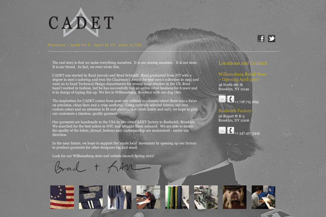

cadetusa.com
Role: Designer & Front End Developer
html, css, jquery, Foundation Bootstrap
Time: March - 2012
Cadet is a new clothing line based in Brooklyn, NY. I helped design the original homepage with the client. All psd to html conversion was done on my own.
Original Homepage
cadetusa.com
hughesnet.com
Role: Front End Developer
html/css, jquery, rails dev environment, coffeeScript/slim/less, x-browser debugging
Time: April to August - 2012
While freelancing at a digital media shop in the city, I worked on a HughesNet.com relaunch. Working within a rails full stack dev environment as a front end guy, I helped clean up code, refactor jquery bugs and fix X-browser issues.
hughesnet.com
howardthinks.com
Role: Designer & Front End Developer
html5, jquery
Time: Ongoing Freelance Relationship
An online portfolio for an art director. Howard designs a new site every year or so and I convert it into html.
howardthinks.com